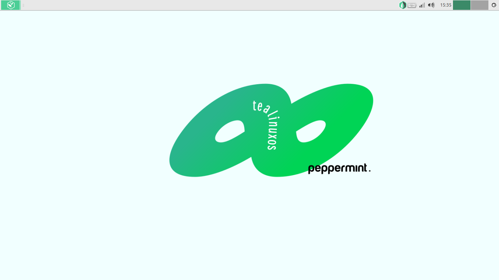
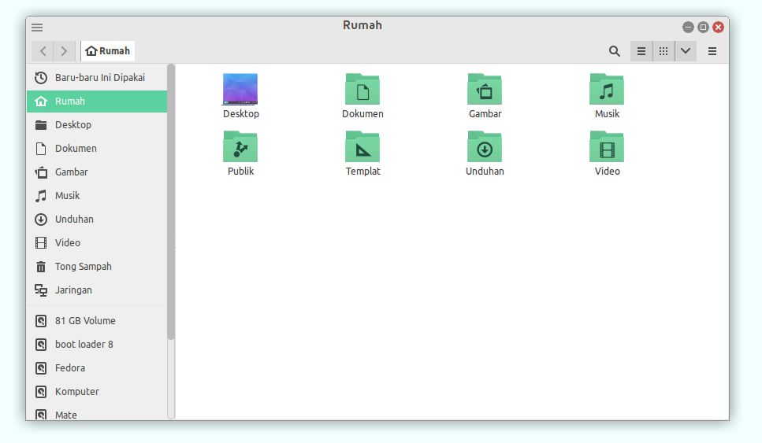
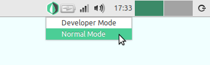
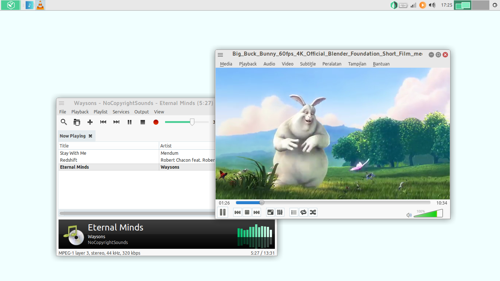
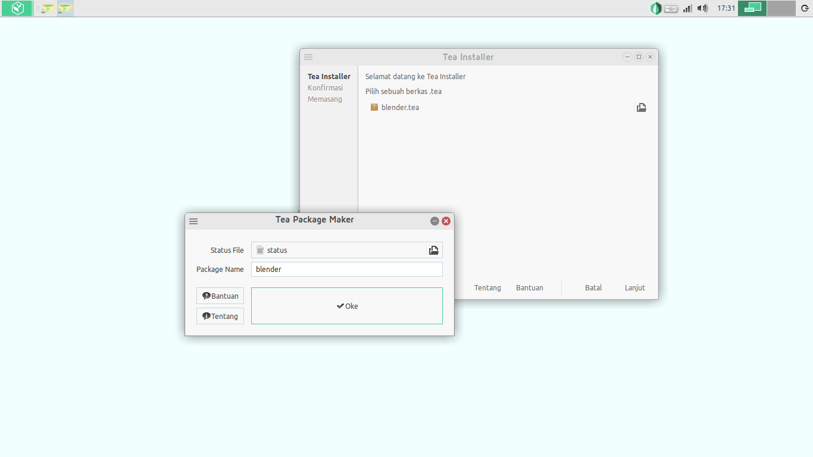
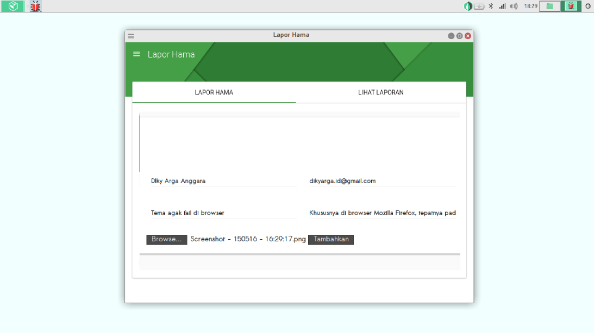
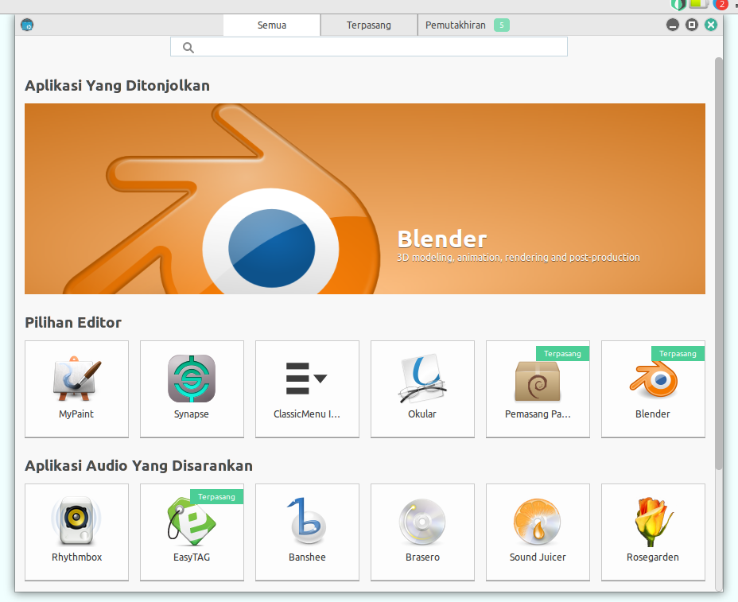

Dokumentasi
Pengguna
TealinuxOS
Pappermint
Apa itu Tealinuxos
Pengenalan TealinuxOS
Tentang
TeaLinuxOS adalah distro Linux turunan Ubuntu yang dikembangkan oleh Dinus Open Source Community (DOSCOM)
yang berorientasi pemrograman. Dengan menghadirkan filosofi, “Nikmatnya sebuah racikan”
TeaLinuxOS dikembangkan secara terbuka dan bersama-sama untuk menghasilkan distro Linux pemrograman yang dikhususkan untuk dunia pendidikan.
Nama
TeaLinuxOS – Nikmatnya Sebuah Racikan!
Kami menggunakan nama distro TeaLinuxOS karena beberapa alasan, yaitu tea yang dalam bahasa Indonesia berarti teh, merupakan minuman khas rakyat Indonesia yang merakyat dan dapat dikonsumsi semua orang. Kami berharap TeaLinuxOS dapat mencukupi kebutuhan penggunanya, terutama para programmer.
Versi
TealinuxOS telah diluncurkan sebanyak 8 versi diantaranya adalah :
- TeaLinuxOS ver 1.0 Code Name : Green Tea, based on Ubuntu 8.04
- TeaLinuxOS ver 2.0 Code Name : Black Tea, based on Ubuntu 9.10
- TeaLinuxOS ver 3.0 Code Name : White Tea, based on Ubuntu 10.10
- TeaLinuxOS ver 4.0 Code Name : Oolong Tea, based on Lubuntu 11.10
- TeaLinuxOS ver 5.0 Code Name : Kukicha Tea, based on Lubuntu 12.10
- TeaLinuxOS ver 6.0 Code Name : Jasmine Tea, based on Lubuntu 13.10
- TeaLinuxOS ver 7.0 Code Name : Rosella Tea, based on Xubuntu 14.04
- TeaLinuxOS ver 8.0 Code Name : Pappermint Tea, based on Xubuntu 16.04
Pembuatan Tealinuxos
Versi terakhir dari TealinuxOS adalah TealinuxOS 8 Pappermint yang dibuat dari core Xbuntu 16.04, Xfce dan FOSS.
Xubuntu 16.04 LTS
Xubuntu merupakan sistem operasi elegan yang mudah digunakan dan dengan edisi LTS “Long Term Support” ini membuat TeaLinuxOS yang berbasis Xubuntu versi ini mendapat dukungan jangka panjang selama 5 tahun sehingga senantiasa stabil, handal dan aman. Untuk informasi lebih lanjut mengenai Xubuntu anda dapat berkunjung di webseite resmi Xubuntu.
XFCE
Xfce merupakan dekstop environment yang ringan yang digunakan di TeaLinuxOS Pappermint. Dengan menggunakan Xfce pemakaian resource sistem lebih sedikit sehingga sistem operasi akan lebih ringan namum tanpa meninggalkan sisi user interface yang ramah pengguna. Untuk informasi lebih lanjut tentang xfce silahkan berkunjung di website resmi Xfce.
FOSS
Semua software yang digunakan dalam sistem operasi TeaLinuxOS berlisensi bebas dan kode sumber yang terbuka semua orang dapat melihat kode sumbernya, berkontribusi memperbaiki atau membuatnya lebih baik. Untuk megetahui lebih tentang FOSS (Free Open Source Software) bisa dilihat di GNU website.
Migrasi dan Upgrade
Migrasi dari Windows
Jika anda sebelumnya hanya menggunakan sistem operasi windows maka selamat datang di dunia open source jika anda yang sudah familiar dengan sistem operasi linux anda dapat melanjutkan ketahap selanjutnya. Bagi anda yang masih baru bermigrasi, jangan cepat menyerah ketika menghadapi kesulitan, anda dapat bertanya di group doscom atau di fan page TeaLinuxOS
para developer dan pengguna lain akan membantu anda. Ini beberapa kata kunci yang sering digunakan di windows dan dapat ditemukan di TeaLinuxOS.
Windows Explorer :  → Accesories → File Manager
→ Accesories → File Manager
My Document : → Accesories → File Manager → masuk direktori /Home/Documents
Control Panel : → Settings → Settings Manager
Jika anda masih sulit bermigrasi ke linux karena ada beberapa software yang sering anda gunakan hanya dapat berjalan di sistem operasi windows anda dapat menggunakan aplikasi wine
atau virtualbox (sudah tersedia di TeaLinuxOS Pappermint) walaupun ini tidak disarankan mengingat tidak semua software yang berjalan di sistem operasi windows dapat berjalan di wine atau virtualbox. Solusi lain anda dapat menggunakan free open source software alternatif yang memiliki fungsi yang sama dengan software tersebut.
Cara mengupgrade
TeaLinuxOS diluncurkan setahun sekali biasanya pada bulan april (diputuskan oleh tim rilis) anda dapat mengupgrade versi TeaLinuxOS anda dengan cara mengunduhnya di
pinguin.
Pengenalan Dekstop Environment
Tampilan lingkungan dekstop TeaLinuxOS Pappermint dengan tema elegan dan simple namun bersahabat dengan pengguna. Beberapa pengenalan tentang lingkungan dekstop di TeaLinuxOS sebagai berikut :
Panel
Pada bagian panel ini terdiri dari icon menu di pojok kiri anda dapat mengkliknya dan menu aplikasi akan muncul.
Disisi kiri ada pengaturan workspace swicher, nama user yang berupa tombol aksi (suspend, logout, shutdown dll) , clock (jam), indikator baterai, indikator volume, indikator jaringan, indikator virtual keyboard.
Untuk panel bagian tengah berisi window menu yaitu aplikasi-aplikasi aktif atau yang sedang berjalan.
→ Settings → Panel → Item . Anda dapat menambahkan atau menghapus item-item yang ada di panel anda.
Dekstop

Pada bagian dekstop hanya terdapat tampilan wallpaper, anda dapat dapat menambahkan folder menambah shortcut mengubah wallpaper atau icon pada dekstop anda. Pengaturannya bisa anda lakukan dengan mengklik kanan di sekitar area dekstop anda.
File dan Direktori

TeaLinuxOS Pappermint menggunakan file manager Nautilus dari gnome. Untuk mengaksesnya dengan → Accesories → File Manager.
Membuat folder baru (new folder)
Mengopi file (copy)
- Pilih folder atau file yang ingin dicopy
- Klik kanan → Copy
- atau menggunakan shortcut Ctrl + c
Memotong file (cut)
- Pilih folder atau file yang ingin dicut
- Klik kanan → Cut
- atau menggunakan shortcut Ctrl + x
Menempel file (paste)
- Pilih tempat tujuan folder atau file yang ingin ditempel
- Klik kanan → Paste
- atau menggunakan shortcut Ctrl + v
Menghapus file (delete)
- Pilih folder atau file yang ingin dihapus
- Klik kanan → Move to trash
- atau menggunakan shortcut delete
Mengeluarkan device (eject)
- Pilih device yang ingin dikeluarkan
- Klik kanan > unmount
- atau klik pada icon arrow keatas di samping kanan nama device
Pengaturan dan Pilihan
→ Settings → Settings Manager → Menu Editor
Pada menu editor ini anda dapat sepenuhnya dapat mengatur baik hirarkhi menu anda, menambahkan perintah-perintah, mengelompokkan aplikas-aplikasi favorit anda, maupun membuat launcher baru.
→ Settings → User and Groups
User and Gorups ini digunakan untuk mengubah informasi pengguna, diantaranya nama, username, password, jenis user apakan administrator atau user biasa. Pada pengaturan ini juga dapat ditambahkan user baru maupun menghapus user lama. Pengaturan Goups dapat menambahkan group baru, menambahkan user dan mengatur privileges user pada groub tersebut. Pada advance setting anda dapat menambahkan inforamsi contact, mengatur user privileges, dan pengaturan mendalam lainnya.
Pengubahan Tampilan
Menganti wallpaper
→ Settings → Dekstop
Pada bagian wallpaper anda dapat memilih wallpaper yang telah kami sediakan ini terletak di
/usr/share/xfce4/backdrops/ jika anda ingin menambahkan wallpaper yang lain, pada bagian Folder anda dapat memilih direktori anda meletakkan gambar wallpaper anda lalu memilihnya.
Merubah tampilan tema
→ Settings → Appearance → Style
Anda dapat mengubah tampilan TeaLinuxOS Pappermint sesuai dengan selera anda, tema deffault yang digunakan oleh TeaLinuxOS Pappermint adalah Tea-Mint-Light , jika anda kurang nyaman dengan tema ini anda dapat menggantinya dengan tema lain dari TeaLinuxOS yaitu Tea-Mint-Dark melalui aplikasi Theme-switcher atau jika tidak berkenan anda bisa mengubah ketema tampilan yang dapat anda unduh sendiri misalnya Orion, Numix atau yang lainnya.
Jika anda menginginkan tema-tema yang lain, anda dapat menginstallnya lalu mengaturnya pada pengaturan Appearance ini.
Merubah tampilan icon
→ Settings → Appearance → Icons
Icons deffault yang digunakan oleh TeaLinuxOS Pappermint adalah Tea-Mint-Light jika anda kurang menyukainya anda dapat menginstall icon lain pada sistem TeaLinuxOS Pappermint anda akan menemukan pengaturannya di Appearance. Jika anda mengunduh icon anda harus menginstallnya terlebih dahulu atau anda bisa meletakkannya di /usr/share/icons/ jika anda hanya user anda saja yang memiliki icon tersebut (user lain di komputer anda tidak) icon bisa diletakkan di /home/username/.icons/ jika folder ini belum ada, anda bisa membuatnya sendiri.
Theme Switcher

TeaLinuxOS 8 telah dilengkapi dengan Theme Switcher Tray, sebuah aplikasi yang memungkinkan anda untuk mengganti tema dengan cepat. Aplikasi ini berupa sebuah icon kecil yang muncul di area indikator pada panel. Klik untuk mengganti tema, dan klik kanan pada icon untuk melihat pengaturan dan about.
Konfigurasi panel
→ Settings → Panel
atau
Klik kanan pada bagian panel yang kosong lalu pilih Panel → Panel preferences
Dalam pengaturan panel ini ada tiga tabs yaitu Display , Appearance dan Item . Dalam Pengaturan panel Display anda dapat mengatur apakah panel anda akan horizontal, vertikal ataupun deksbar dan juga pengaturan ukuran panjang lebar panel. Pada tabs Appearance mengatur bagaimana panel anda terlihat, misalnya saja kita buat Background Alphanya 0 maka panel anda tidak akan memiliki background. Atau coba mengatur Leave Opacitynya menjadi 0 maka panel anda akan terlihat hanya ketika anda mendekatkan pointer ke panel anda. Tab ketiga adalah Item yang berisi item-item apa saja yang berada di panel anda dapat menambahkan maupun menghapus item yang telah ada. Dengan pengaturan ini anda dapat merubah panel deffault menjadi panel anda sendiri sesuai yang anda sukai.
Pengenalan Aplikasi Bawaan

Audacious
Audacious adalah sebuah perangkat lunak Pemutar Media berlisensi bebas yang berfokus dengan penggunaan sumber daya komputer yang rendah, kualitas suara yang tinggi dan mendukung berbagai jenis format. Untuk mengetahui lebih lanjut silahkan berkunjung di website resmi audacious Audacious.
VLC
VLC Media Player merupakan perangkat lunak (software) pemutar beragam berkas (file) multimedia, baik video maupun audio dalam berbagai format, seperti MPEG, DivX, Ogg, dan lain-lain. VLC Media Player juga dapat digunakan untuk memutar DVD,VCD, maupun CD. VLC Media Player bersifat sumber terbuka (open source) dan tersedia untuk berbagai sistem operasi. Mulai dari Microsoft Windows, beragam distro Linux, Mac OS, dan beberapa sistem operasi lainnya. VLC.
Multimedia Codec
Multimedia Codec library yang memudahkan anda dapat memutar video-video dan musik-musik kesukaan anda.
Aplikasi Perkantoran
LibreOffice 5
TeaLinuxOS Pappermint telah menyediakan paket software perkantoran yaitu LibreOffice yang terdiri dari LibreOffice writer untuk pengolahan dokumen, LibreOffice Impress untuk pengolahan presentasi, LibreOffice Calc untuk pengolahan data spreadsheet dan banyak paket LibreOffice lainnya. Informas lebih lanjut silahkan kunjungi website resmi LibreOffice.
Browser
Firefox
Firefox merupakan browser yang sudah cukup tua sehingga stabil dan aman. TeaLinuxOS Pappermint menghadirkan browser Firefox sebagai deffault browser untuk menunjang produktifitas pengguna. Untuk mengetahui tentang Firefox dan berbagai fitur yang disediaannya anda dapat berkunjung ke website resmi Firefox.
Sistem
Tea Package

Menginstall aplikasi beserta seluruh dependensi secara lengkap dengan mudah menggunakan Tea Package.
Tea Package merupakan aplikasi yang dikembangkan oleh developer TeaLinuxOS berbasis Python script untuk menginstall aplikasi berserta seluruh dependensinya secara offline. Ini memudahkan pengguna untuk berbagi paket aplikasi dan menginstallnya tanpa harus terkoneksi internet. Jika anda telah mengenal .exe pada sistem operasi windows maka di TeaLinuxOS Pappermint memiliki .tea utuk paket aplikasi yang digunakan. Penginstalan .tea dapat dilakukan pada Tea Package Installer. Untuk mengetahui tentang projek ini silahkan lihat di github Tea Package.
TeaLinux Module Installer

TeaLinuxOS Module Installer merupakan penginstallan aplikasi pemrograman secara offline menggunakan CD/DVD yang sudah terisi berbagai macam Modul aplikasi. Modul aplikasi yang disediakan diantaranya untuk Modul Pemrograman berisi aplikasi Android Studio, C/C++ compiler, apache2, PHP5, MySQL, PyCharm, Atom, NodeJs + npm, Geany, MonoDevelop, Brackets, NetBeans, Eclipse, dan Qt. Modul Multimedia berisi aplikasi Blender, Inkscape, GIMP, Audacity, LMMS, Ardour, Synfig, Darktable, FFMPEG, dan Krita. Sedangkan untuk Modul Networking VirtualBox, traceroute, remmina, wireshark, dan gigolo.
Modul-modul ini dapat anda install dengan memasukkan DVD TealinuxOS lalu klik → Accessoris → TeaLinux Module Installer pilih modul-modul yang anda inginkan, lalu klik Install.
Lapor Hama

Lapor hama adalah aplikasi untuk melaporkan hama (bugs) atau saran untuk sistem operasi TeaLinuxOS dengan mudah, dengan demikian kami harap dapat mengetahui celah celah pada TeaLinux OS untuk TeaLinuxOS yang lebih baik.
Selain melalui aplikasi ini, Anda juga dapat melaporkan hama TeaLinux OS di tealinuxos.org/lapor
Koneksi Jaringan dan Internet
Menyambung dan Memutuskan jaringan
→ Settings → Network Connection
atau klik icon NetworkManager yang berada di panel → Edit.
Koneksi jaringan di TealinuxOS Pappermint menggunakan network connection untuk mengatur jaringan menggunakan kabel, jaringan wireless, mobile broadband, VPN dan koneksi DSL. Network connection akan menghubungkan komputer anda secara otomatis dengan jaringan, namun jika penyambungan pertama kali biasanya memerlukan informasi keamanan untuk terhubung ke jaringan.
Untuk memutuskan (disconnect) jaringan klik pada icon NetworkManager yang berada di panel lalu klik disconnect.
Konfigurasi koneksi
Jika anda menginginkan untuk mengkonfigurasi jaringan anda, Pada kotak dialog Netwok Connection anda akan melihat koneksi-koneksi jaringan yang ada. Pilih salah satu untuk mengatur konfigurasi atau anda dapat menambahkan koneksi jaringan baru dengan memilih Add.
Berbagi koneksi ke komputer lain
Anda dapat berbagi koneksi ke komputer lain dengan menggunakan kabel Ethernet. Untuk pengaturannya klik icon NetworkManager → Edit lalu pilih Add pada kotak dialog pilih jenis koneksi yang anda inginkan, Setelah create pada bagian tab IPv4 Setting pilih metode yang digunakan.
Troubleshooting pada jaringan
Jika koneksi jaringan anda tidak bekerja secara sempurna anda dapat menggunakan beberapa cara untuk menemukan kesalahan koneksi anda.
Mengecek informasi koneksi
- Menggunakan icon NetworkManager
NetworkManager → Information. Jika information di disable ini kemungkinan karena komputer anda tidak terkoneksi dengan jaringan.
- Menggunakan ifconfig
buka terminal (short cut terminal guake : F12)
ketikkan perintah
ifconfig lalu enter.
ifconfig ini akan menunjukkan informasi koneksi anda meliputi nama koneksi, IP address di inet addr , dan MAC address di Hwaddr.
Mengecek koneksi bekerja
Untuk mengecek apakah koksi anda bekerja atau tidak anda dapat mengetesnya melalui ping.
- Buka terminal
-
ketikkan perintah
ping tealinuxos.org
- lalu enter.
Jika koneksi berhasil anda akan menerima pesan berupa jumlah statistik paket yang di transmisikan. Jika anda mendapat pasan ping: unknown host tealinuxos.org maka komputer anda mungkin tidak terhubung ke internet dan tidak dapat menjangkau Domine Name System (DNS) server.
Print dan Scan
Penggunaan Printer
Kebanyakan printer secara otomatis didukung oleh TeaLinuxOS Pappermint. Aplikasi Konfigurasi Printer memungkinkan Anda untuk menambahkan printer, serta mengubah pengaturan mereka. Anda juga dapat menggunakan aplikasi ini untuk berbagi printer dengan komputer lain di jaringan, menonaktifkan printer atau restart.
Print Lokal
- Dapatkan nama model printer Anda
- Pastikan printer sudah hidup
- → Setting → Setting Manager → Printers
- Klik → Server → New → Printer
- Printer Anda harus secara otomatis terdeteksi dan ditampilkan dalam jendela Devices
- Pilih printer Anda dan klik Forward
- Komputer Anda akan mencari dan menginstal driver untuk printer Anda
- Anda dapat memasukkan deskripsi dan lokasi untuk printer Anda
- Tekan Apply
- Printer Anda harus dikonfigurasi dengan benar pada saat ini dan Anda akan diminta jika Anda ingin mencetak halaman uji
- Jika Anda menekan tombol Print Test Page, halaman uji akan mencetak dan Anda dapat memverifikasi apakah itu dicetak dengan benar, atau Anda dapat menekan Batal.
- Jika Anda masih mengalami masalah, cobalah menggunakan antarmuka berbasis browser CUPS. Hal ini dapat diakses di http: // localhost: 631 /.
Print menggunakan jaringan
- Dapatkan nama model printer Anda
- Pastikan printer sudah hidup
- → Setting → Setting Manager → Printers
- Klik → Server → New → Printer
- Klik pada Network Printer di jendela Devices
- Jika printer Anda terhubung langsung ke mesin Windows di jaringan Anda, pilih Windows Printer via SAMBA. Jika tidak, pilih protokol printer Anda menggunakan untuk berkomunikasi.
- Masukkan rincian printer jaringan dan tekan Teruskan
- Pilih produsen printer dan kemudian tekan Teruskan
- Pilih model printer dan driver kemudian tekan Teruskan
- nda dapat memasukkan deskripsi dan lokasi untuk printer Anda di bidang yang sesuai
- Tekan Apply
- Printer Anda dikonfigurasi dengan benar pada saat ini dan Anda akan diminta untuk mencetak halaman uji, tekan Batal atau Print Test Page tergantung pada preferensi Anda
Penggunaan Scanner
Banyak scanner telah didukung oleh TeaLinuxOS Pappermint, sehingga mudah dalam penginstallan dan pengoperasiannya.
Scan dokumen
- Tempatkan dokumen yang ingin di scan ke scanner
- → Graphics → Simple Scan
- Klik Document → Scan
- Pilih media yang ingin anda scan: Single Page, All Pages From Feeder, Text or Photo. Bergantian, tekan tombol Scan pada pemindai cara ini seharusnya bisa berhasil.
Mengelola Aplikasi Terinstall
Menginstall Software
Menginstall aplikasi dengan menggunakan internet
Pastikan komputer anda terkoneksi dengan jaringan komputer karena penginstalan akan langsung mengunduh paket aplikasi yang ingin di install dari repository ubuntu.
Cara paling mudah adalah melalui Software Center.
Klik → Software

Atau lewat terminal, Buka terminal
Ketikan perintah:
sudo apt-get install nama_paket
Masukkan password komputer anda
Ketika ada dialog “Do you want to continue? (Y/n)” ketik “y”
Tunggu hingga proses pengunduhan dan pemasangan selesai.
Jalankan aplikasi dengan memanggil nama_paket di terminal atau anda dapat mencarinya di menu.
Menginstall aplikasi tanpa internet
Jika anda memiliki aplikasi dengan ekstensi .tar.gz, .deb ataupun .tea anda dapat menginstalnya tanpa koneksi internet.
- Menginstall aplikasi .tar.gz
Buka terminal anda lalu ketikkan perintah
tar xzvf nama_file.tar.gz(perintah untuk mengekstrak file)
Masuk ke folder yang telah di ekstrak
cd nama_file
./configure
make
sudo su
#make install
Pada umumnya penginstalan file tar.gz menggunakan perintah diatas namun jika aplikasi tidak terinstall atau terjadi error, sebaiknya anda membaca file README atau INSTALL yang biasanya disertakan dalam file aplikasi tersebut untuk panduan penginstalan.
- Menginstall aplikasi .deb
Jika anda ingin menginstall aplikasi berekstensi .deb yang merupakan debian paket ada dua langkah.
- Menggunakan Package Installer
kliknya dua kali pada file .deb
klik tombol Install Package
Masukkan password anda
Tunggu hingga muncul pesan Installation finished.
-
Menggunakan Terminal
Buka teminal ketikkan perintah
sudo dpkg -i nama_file.deb
- Menginstall aplikasi .tea
Penginstalan paket aplikasi .tea dengan menggunakan Tea Package Installer
→ System → Tea Package Installer
Pilih Cari
Lakukan pencarian dimana anda meletakkan file .tea
Pilih Install
Pilih Lanjut hingga selesai.
- Menginstall melalui Tea Module Installer
Untuk mengistall aplikasi melalui Tea Module Installer anda dapat melihatnya disini.
Uninstall Software
Untuk menguinstall software tertentu anda dapat melakukannya dengan cara berikut:
Buka terminal, pastikan terlebih dahulu nama paket yang ingin anda uninstall denganmenggunakan perintah:
dpkg –list
Setelah mamastikan paket yang ingin ada uninstall ketikkan perintah
sudo apt-get remove nama_paket
Masukan password
Tunggu hingga proses uninstall selesai.
Menambah Repository
Repository merupakan sekumpulan paket-paket aplikasi atau program untuk sebuah sistem operasi (Linux) yang digunakan untuk menunjang kinerja dari sebuah aplikasi, program dan sebagainya yang didapatkan dari server mirror website paket-paket tersebut. Ada dua cara untuk menambahkan repository ke sistem.
- Melalui Terminal
Buka terminal, lalu ketikkan perintah:
sudo add-apt-repository ppa:nama_pembuat/nama_paket
sudo apt-get update
sudo apt-get install nama_paket
- Melalui Sistem
→ Settings → Software & Updaters
Pada jendela Software & Updaters pilih tab Other Software
Klik tobol Add
Isikan repository yang ingin ditambahkan
Klik tobol Add Source
Menginstall melalui Tealinuxos IDE Installer
Penginstallan paket menggunakan TeaLinux IDE Installer sebagai berikut:
- Masukkan CD IDE Installer
- Jalankan TeaLinux IDE Installer → Accessories → tealinux-ide-installer
- Pilih paket yang ingin di Install
- Klik tombol Install
Mengupdate software
→ Settings → Software Updater
Mengupdate software dapat melalui layanan Software updater, sistem akan mengecek update software lalu akan mengunduh dari internet dan memasang update-update dari software.
Menjaga Keamanan Komputer
Tips Menjaga Keamanan Komputer
Beberapa tips menjaga keamanan komputer anda diantaranya :
Mengubah password komputer secara berkala
Meskipun anda memiliki password yang sangat sulit dipecahkan alangkah baiknya untuk tetap waspada dengan mengganti password komputer anda secara berkala, langkah-langkahnya sebagai berikut:
→ Setting → User and Groups
Klik username anda pada list
Klik Change, pada pengaturan Password
Anda dapat memilih set password by hand yaitu anda memasukkan password anda sendiri atau memilih Generate random password untuk memilih password secara acak.
Terakhir pilih Ok
Kunci layar ketika meninggalkan komputer
Mengunci layar saat hendak meninggalkan komputer sangat penting untuk menghindari seseorang mengakses komputer anda. Untuk mengunci → Lock Screen atau Klik nama user pada panel → Lock Screen.
Mengatur Firewall
Firewall membantu mencegah pelanggaran keamanan dengan memblokir koneksi dari sumber yang tidak diketahui. Pada kondisi awal Firewall tidak dijalankan namun anda dapat menginstall aplikasi seperti Firestarter atau yang lainnya.
Waspada saat mengakses internet
Berikut adalah beberapa tips untuk menjaga aman secara online:
-
Jangan pernah membalas email yang tidak diminta (spam, penipuan atau email phishing) atau mengklik link di email. Biasanya anda akan dikirimin lebih banyak email spam jika mengklik link di email.
-
Jangan pernah mengklik link dalam email yang meminta password Anda atau informasi rahasia lainnya. Hal ini memungkinkan anda di arahkan untuk membuka alamat (mungkin berbahaya). Sebaliknya, ketik link langsung ke browser web Anda sendiri dan melanjutkan dari sana.
-
Jika sebuah situs web meminta rincian keuangan Anda, pastikan bahwa itu adalah aman. Dalam web browser Firefox, situs aman memiliki ikon gembok di sebelah kiri alamat. Klik pada gembok untuk membaca informasi lebih lanjut tentang keamanan website.
-
Hanya men-download dan menjalankan software dari sumber yang Anda percaya.
Backup data secara teratur
Masalah yang mungkin terjadi adalah hilangnya file atau data karena pengaturan untuk satu atau alasan lain. Penyebab kehilangan data tersebut banyak dan beragam; misalnya saat kegagalan daya untuk sengaja menghapus file. Hal ini sangat disarankan agar Anda membuat cadangan pada file-file penting anda, jika Anda menghadapi masalah tersebut, Anda masih memiliki cadangannya.
Sebaiknya menyimpan cadangan file secara terpisah dari komputer Anda; seperti CD dan DVD, hard disk eksternal, disk USB maupun komputer lain.
Cara yang paling mudah membuat cadangan file adalah secara manual menyalinnya ke lokasi yang aman dengan menggunakan File Browser serta Archive Manager untuk mengompres file dan membungkus file-file tersebut. Atau, anda dapat menggunakan aplikasi backup khusus.
Tips saat membuat backup data:
- Buat cadangan secara teratur
- Pastikan sudah terbuat dengan benar
- Beri label backup dengan jelas dan simpan di tempat yang aman.
Perangkat Keras
Pembatasan Beberapa Driver
Mengapa beberapa driver dibatasi?
Pembatasan Driver (Restricted Driver) adalah keterbatasan driver untuk sebuah perangkat hardware karena tidak tersedia secara bebas atau open source.
Kebanyakan device (hardware) yang terpasang di komputer anda bisa berfungsi secara normal di TeaLinuxOS. Device ini cenderung tidak memiliki keterbatasan driver, yang artinya driver dapat dimodifikasi dan masalah dengan device dapat dibetulkan.
Ketika beberapa hardware tidak dapat berjalan lancar di TeaLinuxOS bisa dikarenakan device tersebut memiliki Restricted Driver (Pembatasan Driver). Biasanya pembuat hardware belum merilis detail dari hardware itu sendiri yang memungkinkan untuk developer membuat semacam driver sendiri. Device yang seperti ini mempunyai fungsi yang terbatas atau mungkin tidak bisa berkerja sama sekali
Mengaktifkan Pembatasan Driver
Jika Pembatasan Driver tersedia untuk beberapa device, anda dapat menginstalnya untuk memungkinkan perangkat anda berfungsi dengan baik.
Jika beberapa driver tersedia untuk perangkat anda dapat diinstal dari Software Source dialog:
- → Settings Manager → Software & Updates
- Driver yang tersedia akan muncul di tab Additional Drivers, pilih dan Apply Changes
- Anda akan, jika perlu, memasukan password administration
- Anda mungkin akan diminta untuk reboot komputer anda setelah proses instalasi selesai
Menonaktifkan Pembatasan Driver
Jika Pembatasan Driver menyebabkan masalah, anda bisa menonaktifkan, ikuti langkah berikut
- → Settings Manager → Software & Updates
- Klik Additional Drivers
- Cari driver yang akan dinonaktifkan dan tekan tombol Deactivate
- Anda akan diminta memasukan password administration
Disk dan Partition
Memeriksa berapa ruang disk yang tersisa
Cara mudah untuk memeriksa ruang disk yang tersedia adalah menggunakan File Manager. Berikut beberapa langkah yang harus dilakukan
- → Accessories → File Manager
- Double-click di File System atau icon Home di Desktop
- Klik folder home di Lancher Panel
Status bar di bagian bawah jendela memperlihatkan ruang tersedia dari drive atau disk yang terpilih. Jika anda memiliki lebih dari satu drive tepasang atau terhubung, anda dapat click di side pane dan anda akan melihat ruang kosong pada drive atau disk tersebut.
Menambah ruang disk
Beberapa cara mudah untuk meberikan ruang kosong lebih:
- Kosongkan trash dengan cara klik kanan di Trash icon pada Desktop atau Launcher Panel dan pilih Empty Trash
- Hapus software package yang tidak digunakan lagi.
- Hapus file yang tidak dibutuhkan.
Mempartisi Perangkat
Anda dapat menggunakan GParted (GNOME Partition Editor) untuk mempartisi perangkat penyimpanan. Klik → Settings Manager → GParted untuk memulai editor partisi
Membebaskan ruang untuk partisi baru
Untuk membuat partisi baru di perangkat yang sudah terpatisi, Anda harus mengubah ukuran partisi yang tersedia. Jika Anda sudah mempunyai ruang kosong, lewati langkah ini dan menuju kebagian Membuat partisi baru. Jika tidak, ikuti langkah dibawah:
-
Pilih perangkat yang akan dipartisi dari list drop-down yang terdapat di kanan-atas dari jendela utama
-
List partisi akan muncul di jendela utama. Pilih partisi yang akan anda rubah ukurannya dan dari menu pilih Partition → Unmount
-
Untuk merubah partisi pilih Partition → Resize /Move. Resize/Move dialog akan muncul. Anda dapat menggunakan Free Space Following (MiB) box untuk memilih berapa banyak ruang yang akan dikosongkan setelah partisi, atau Free Space Preceding (MiB) untuk mengosongkan ruang sebelum partisi ini.
-
Klik Resize / Move
-
Untuk menerapkan perubahan, klik Edit → Apply All Operations
Membuat Partisi baru
Untuk membuat partisi baru:
- Pilih perangkat yang akan dipartisi dari list drop-down di bagian kanan-atas dari jendela utama.
- List dari partisi akan muncul. Pilih unallocated, klik kanan dan click New
- Dari File system: pick list, pilih type dari filesystem yang akan digunakan.
- Jika dibutuhkan, masukkan deskripsi partisi di Label : field
- Click tombol Add
- Untuk menerapkan perubahan, klik Edit → Apply All Operation
Memformat Partisi
Untuk menghapus partisi, lakukan langkah berikut:
- Pilih perangkat dari list drop-down di bagian kanan-atas dari jendela utama
- List partisi akan muncul. Pilih partisi dan pilih Partition → Unmount
- Pilih partisi yang akan diformat dan pilih Partition → Format to dan pilih tipe file system dari list untuk dirubah ke tipe tersebut
- Untuk menerapkan perubahan, klik Edit → Apply All Operations
Mount dan Unmount perangkat
Ketika anda memasang sebuah perangakat removable storage (ex : Flashdisk) ke komputer anda, harusnya perangkat tersebut akan tersambung (mounted) oleh operating system yang memperbolehkan anda untuk mengakses file di perangkat tersebut
Untuk mencari bagaimana cara mount dan unmount perangkat penyimpanan secara manual dan/atau otomatis, liat di halaman Ubuntu community wiki untuk perintah mount.
Ketika anda mengcopy files dari perangkat penyimpanan removable, perangkat tersebut tidak selalu tertulis di perangkat secara langsung. Sebaliknya perangkat tersebut akan disimpan dalam antrian sehingga mereka semua dapat ditransfer ke perangkat pada saat yang sama (untuk alasan efisiensi).
Laptop
Pengaturan manajemen daya
Anda mungkin ingin mengubah pengaturan manajemen daya laptop Anda untuk membantu menghemat baterai.
- → Settings Manager → Power Manager
- Mengubah pengaturan yang sesua
- Perubahan yang diterapkan dapat langsung dilihat
Touchpads
Sebagian besar laptop terdapat touchpad, yang digunakan untuk mengontrol pointer mouse. Ada banyak cara untuk mengubah cara touchpad berkerja; pengaturan touchpad dasar dapat dikonfigurasi dengan cara berikut:
- → Settings Manager → Mouse dan Touchpad
- Pada tab Device : pilih touchpad
- Anda dapat mengubah pengaturan touchpad sesuai dengan keinginan Anda.
Suspend dan Hibernate
Untuk menghemat daya, Anda dapat mengalihkan komputer ke salah satu dari sejumlah mode hemat daya ketika Anda tidak menggunakannya:
Suspend adalah perintah untuk membuat komputer anda seperti tertidur. Komputer masih akan diaktifkan dan semua pekerjaan akan dibiarkan terbuka, dengan menggunakan daya yang lebih sedikit. Anda dapat membangunkan komputer dengan menekan tombol atau mengklik mouse.
Hibernate adalah mematikan komputer sepenuhnya sambil menyimpan keadaan saat komputer (seperti menjaga semua dokumen yang terbuka). Ketika Anda menghidupkan kembali komputer setelah Hibernate, semua pekerjaan Anda harus dikembalikan seperti sebelum Hibernate. Tidak ada daya yang digunakan saat komputer hibernate.
Shutting Down adalah mematikan komputer sepenuhnya tanpa menyimpan keadaan saat komputer masih hidup. Tidak ada daya yang digunakan saat komputer dimatikan.
Resumming membawa komputer keluar dari mode hemat daya dan kembali ke operasi normal.
Anda dapat secara manual mengalihkan komputer ke mode hemat daya dengan menekan Menu → logout dan kemudian pilih tombol mode yang sesuai.
Komputer saya tidak Suspend atau hibernasi dengan benar
Beberapa komputer tidak dapat Suspend atau hibernate denga benar di TeaLinuxOS. Anda mungkin melihat beberapa gejala seperti berikut:
- Komputer tidak mati setelah Anda klik untuk hibernate itu.
- Ketika Anda menghidupkan komputer setelah hibernate itu, program yang sebelumnya terbuka Anda tidak hidup.
- Komputer tidak bangun setelah proses suspend.
- Program tertentu atau perangkat keras berhenti bekerja dengan benar setelah melanjutkan dari hibernate atau suspend.
Jika Anda mengalami masalah ini, Anda harus melaporkan bug. Masalah mudah-mudahan akan diperbaiki dalam versi berikutnya dari TeaLinuxOS. Jika hardware Anda tidak bekerja dengan benar setelah suspend atau hibernate komputer, restart komputer Anda. Jika program tidak bekerja dengan benar, cobalah menutup program dan kemudian mulai lagi.
Mouse dan keyboard
Ketika Anda menginstal TeaLinuxOS Anda diberi pilihan untuk memilih jenis keyboard dan bahasa. Selama instalasi, perangkat penunjuk harus secara otomatis terdeteksi dan dikonfigurasi. Jika Anda ingin atau perlu mengubah pengaturan dari setiap perangkat ini setelah instalasi, Anda dapat melakukannya dengan klik → Settings Manager → Mouse dan Touchpad atau → Settings Manager → Keyboard.
Pilihan untuk mouse dan touchpad meliputi:
- Orientasi tombol
- Kecepatan pointer dan sensitivitas
- Sensitivitas double-click
- Tema Kursor
Beberapa pilihan untuk mengkonfigurasi keyboard Anda meliputi:
- State of the Num Lock key on startup
- Key repeat speed and delay
- Cursor blinking speed
- Application keyboard shortcuts
- Keyboard layout and language
Tugas-tugas administratif
User dan Grub
Mengelola User
- Menambah user baru
Klik tombol Add
Masukkan password anda
Isikan Name dan Username yang akan digunakan
Klik tombol Ok
- Memberikan user hak sebagai super user atau administrator
pilih User yang tipe akunnya akan diubah, lalu tekan tombol Change
Pilih tipe Administrator (pilih Dekstop User untuk kembali seperti semula)
Klik tombol Ok
- Menghapus user
Pilih User yang akan dihapus
Klik tombol delete
Mengelola Grup
- Menambah grup
Klik tombol Manage Groups
Klik tombol Add
Isikan Nama grup yang anda inginkan, kalau mau anda juga dapat mengubah Group ID.
Pilih User yang akan dimasukkan ke grup tersebut.
Klik tombol Ok
- Menghapus Grup
Klik tombol Manage Groups
Pilih Grup yang akan dihapus
Klik tombol delete
Perintah Baris
Daftar Perintah Umum
Direktori kita berada
Perintah pwd atau print working directory digunakan untuk mengetahui posisi direktori dimana kita berada. Cara menggunakan perintah ini tinggal ketikkan perintah pwd pada terminal, lalu akan muncul path direktori dimana kita berada.
pwd
Pindah Direktori (change directory)
Perintah cd digunakan untuk mengubah direktori dimana kita berada.
cd [nama_direktori]
Untuk kembali kedirekroti satu level sebelumnya perintah yang digunakan sebagai berikut:
cd .
Untuk kembali kedirektori root perintahnya sebagai berikut:
cd ..
List
Perintah ls digunakan untuk menampilkan daftar file yang ada di direktori.
ls
Untuk menampilkan list file yang ada didirektori tertentu:
ls [nama_direktori]
Copy File
Perintah cp digunakan untuk mengopi file atau direktori ke direktori lain.
cp [nama_file] [nama_direktori]
Pindah File
Perintah mv digunakan untuk memindah file atau direktori ke direktori lain.
mv [nama_file] [nama_direktori]
Hapus File
Perintah rm digunakan untuk menghapus file atau direktori ke direktori lain.
rm [nama_file]
Penggunaan perintah
Perintah man digunakan untuk menampilkan cara penggunaan suatu perintah.
man [nama_perintah]
man rm
Menjalankan Perintah dengan Hak Administrasi
Ketika kita bekerja dengan perintah-perintah baris, beberapa perintah tidak bisa dilakukan tanpa hak administrator, sehingga butuh perintah sudo di awal setiap perintah tersebut. Sesaat setelah anda memberi perintah sudo sistem akan meminta password lalu akan mengingatnya selama 15 menit. Dalam waktu 15 menit ini anda dapat menjalankan perintah sudo tanpa harus mengetik password setiap kali menjalankan perintahnya.
sudo apt-get update
Daftar Aplikasi
Lisensi
Lisensi : Creative Commons
top